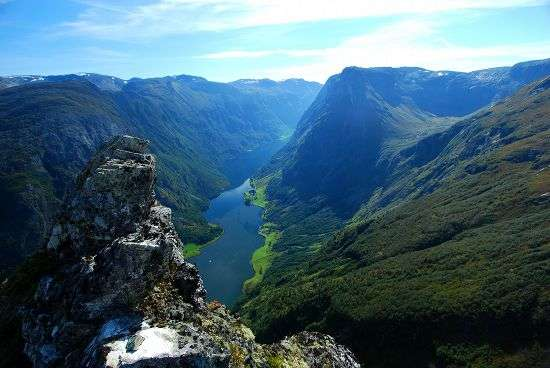
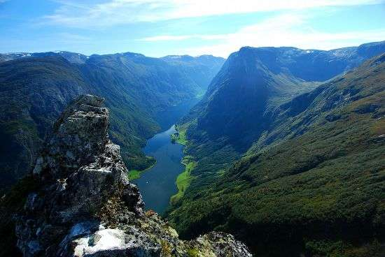
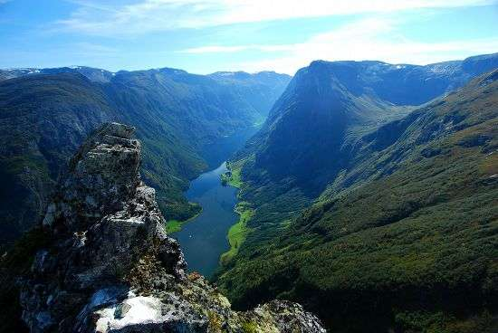
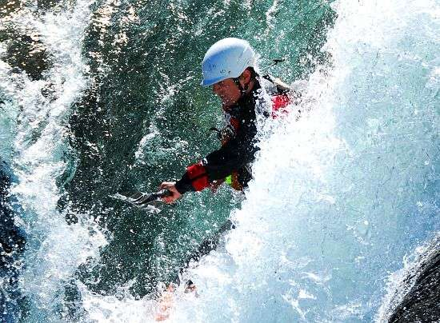
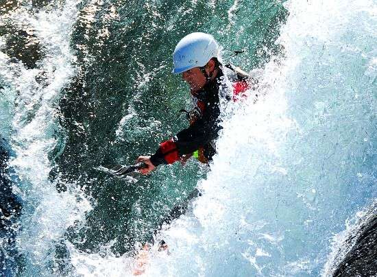
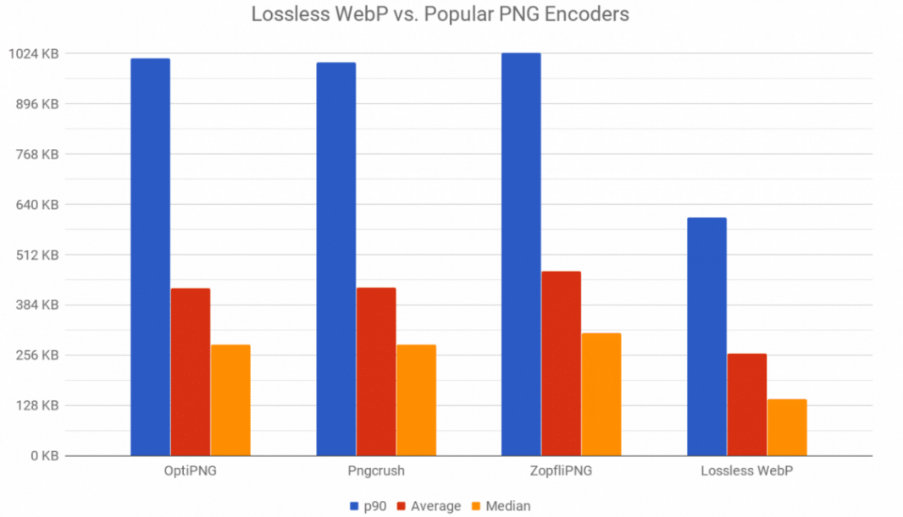

WebP — это формат файла, разработанный компанией Google в 2010 году. Его особенностью является продвинутый алгоритм сжатия, позволяющий сократить размер картинки без видимых потерь в качестве.
В среднем вес картинок сокращается на 25–35%, что позволяет вебмастерам размещать на сайтах больше изображений, не тратя впустую драгоценное пространство на жестком диске арендованного VDS.
Естественно, основное преимущество — это размер. Сокращение размера положительно влияет сразу на четыре аспекта работы в интернете:
Но говорить о преимуществах WebP проще в сравнении с другими форматами.
JPEG — формат, отлично подходящий для изображений с большим количеством цветов. Он мало весит и имеет приемлемое качество, из-за чего обрел столь большую популярность среди пользователей.
Главный недостаток JPEG — заметная потеря в качестве и детализации из-за недостаточно продуманных алгоритмов сжатия. Это особенно заметно при приближении или когда у картинки изначально не слишком высокое разрешение.
Для примера использовались изображения одинакового размера

 


PNG — формат, ставший золотым стандартом и сумевший сохранить идеальный баланс между качеством и весом. Он подходит для изображений с логотипами или некрупным текстом. Там, где нужна высокая детализация.
Но речь идет о графике. С фотоснимками PNG справляется хуже более узкоспециализированных расширений. К тому же PNG заметно тяжелее того же JPEG даже после компрессии (хоть и сохраняет высокое качество).

WebP по детализации и цветопередачи на одном уровне с PNG. Разницу трудно заметить даже при сравнении лоб в лоб. Он хорошо отображает как графику, так и фотографии. При этом размер зачастую ниже, чем у PNG, на 30%.
Формат WebP можно назвать перспективным — он позволяет облегчить изображение, сохраняя его качество, а значит уменьшить размер страницы сайта. Но такой формат поддерживают не все браузеры, поэтому рекомендуется иметь несколько вариантов картинок и настроить веб-сервер так, чтобы выдавать пользователям картинки в WebP, если поддержка есть.